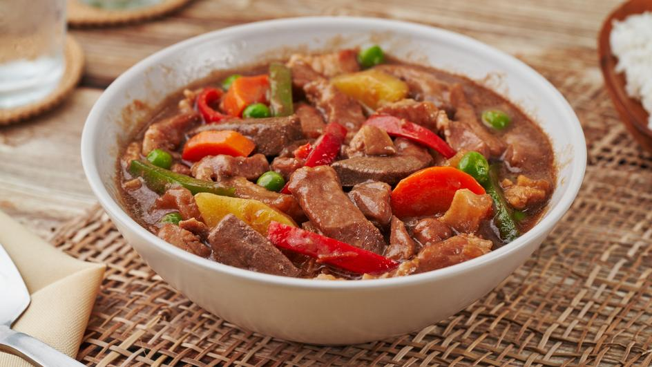

Igado Recipe
What is Igado?
Pork Igado is an Ilocano stew made of strips of liver and pork tenderloin braised in a tangy and savory soy sauce-vinegar mixture and spices such as garlic, onions, and bay leaves. Other innards such as kidney and heart are also common additions, as well as green peas and bell peppers. Although this pork and liver dish is usually associated with pork menudo due to a few common ingredients, it's closer in taste to adobo and very similar to the Kapampangan kilayin.
Ingredients
1/2 kilo pork tenderloin cut into strips
1/2 kilo Pork liver cut into strips
1 cups green peas
1 medium-sized carrot cut into strips
5 pcs garlic cloves minced
1 medium-sized onion diced
1 large red bell pepper cut into strips
5 pieces dried bay leaves
7 tablespoons soy sauce
1/2 cup vinegar
1 cup water
2 tablespoons cooking oil
Salt and pepper to taste
Instructions / How to Cook
1. In a large frying pan, sauté the garlic and onions.
2. Add the pork tenderloin and fry it until the color of the pork turns light brown.
3. Pour soy sauce and water then simmer until the pork is tender.
4. Next, add dried bay leaves, salt, and pepper and simmer for 2 minutes.
5. Add the pork liver and vinegar then simmerfor another 8 minutes.
6. Add the carrots and simmer for 3 minutes.
7. Add the green peas and red bell pepper and simmer for 3 minutes to thicken the remaining sauce.
8. Serve as Pulutan with Iced cold Beer or steamed rice.